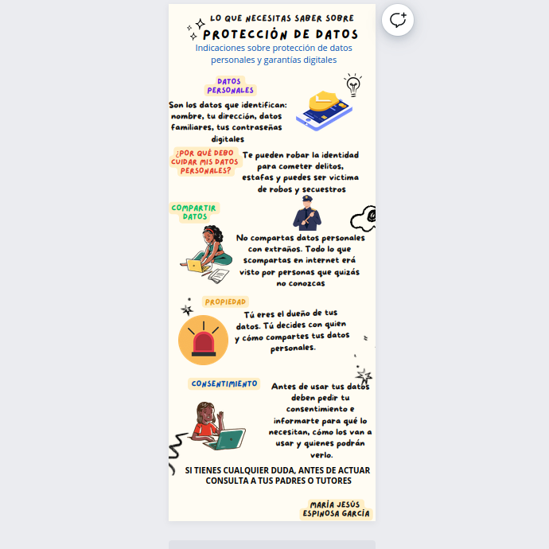
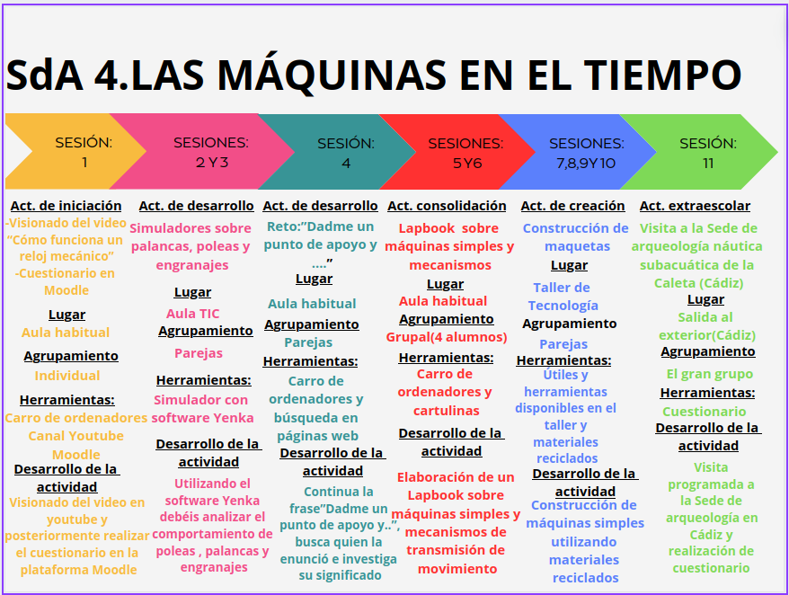

Las máquinas en el tiempo
Vamos a empezar un nuevo proyecto
En el desarrollo de esta unidad didáctica vamos a descubrir investigando como los distintos tipos de máquinas simples y mecanismos de transmisión y transformación de movimiento están presentes en nuestra vida cotidiana.
Protección de datos
A continuación dejo una infografía con unas indicaciones sobre la protección de datos personales y garantías digitales para que lo tengáis presentes a la hora de realzar las actividades que se proponen a lo largo de la unidad didáctica.

Visualización de actividades
A continuación os he dejado explicado como vais a distribuir todas las actividades que se proponen a lo largo de la unidad didáctica, para que en un solo golpe de vista podáis visualizar las actividades
